El belén trae Niño Dios de recambio , por si acaso Herodes logra agarrar a uno.
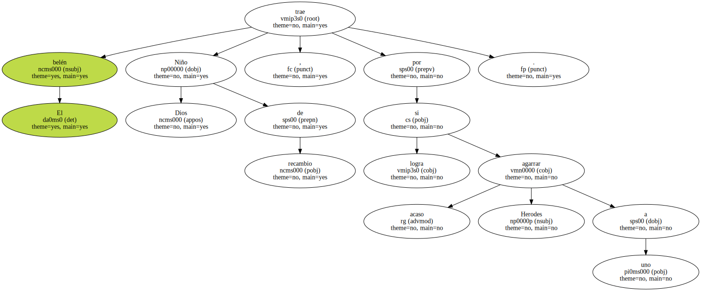Era una observación un tanto profana y preferí dejarla pasar sin comentario alguno.
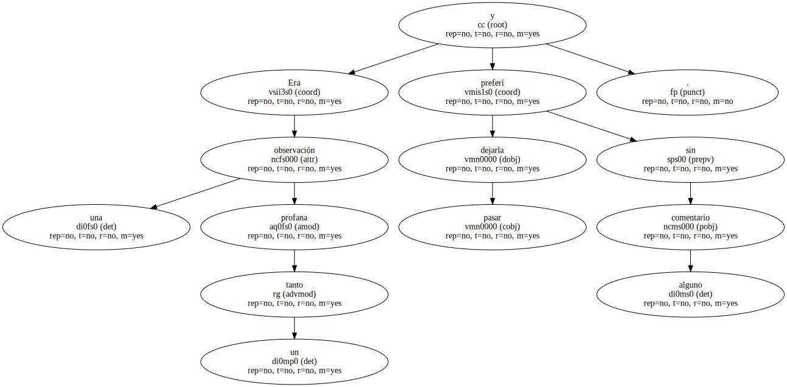- No es eso - intentó explicar mi hijo tras unos momentos de reflexión -.
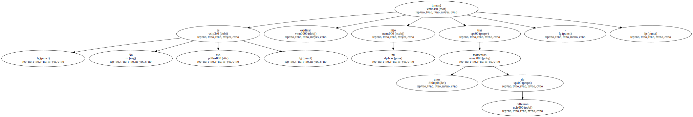Lo que pasa es que el Niño Dios de pañal blanco es para los seguidores del Real Madrid y el otro para los del Atleti.
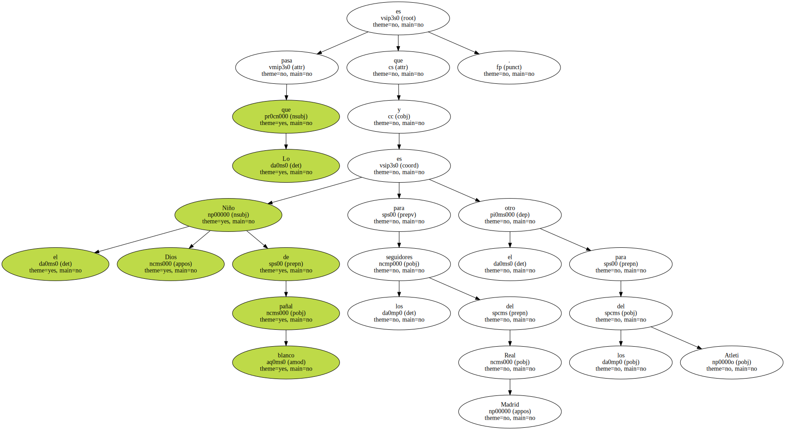Entendí que la blasfemia acechaba al belén , y opté entonces por sacarles tarjeta roja a mis hijos y declarar cerrado el caso con la explicación de un descuido de fábrica.
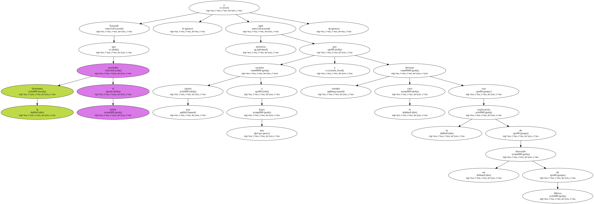- Algún día la Comunidad Europea homologará los belenes , y no volverán a presentarse estos errores - dije -.
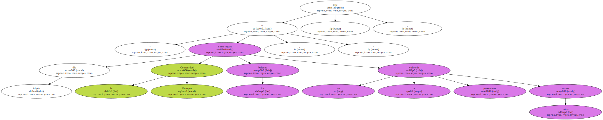Y ahora , María Angélica , tire al cubo de la basura uno de los dos Jesuses y dedíquense a montar el nacimiento.
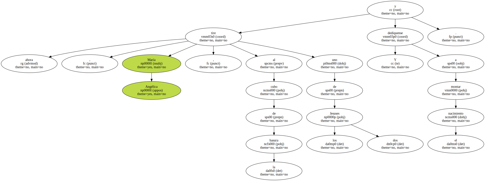María Angélica se puso pálida y musitó cualquier disculpa para no hacerlo.
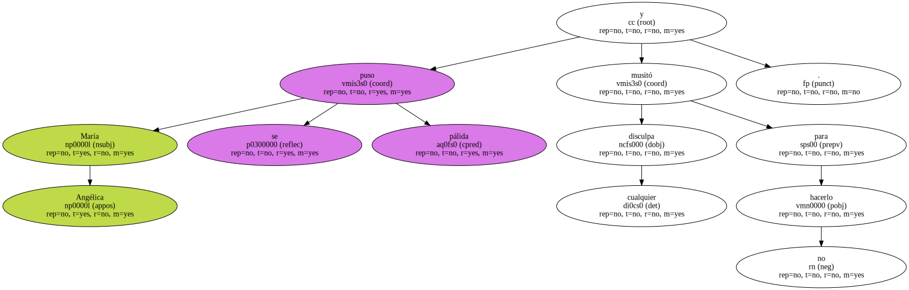Pedí entonces a mi hijo que se deshiciera de una de las dos figuritas.
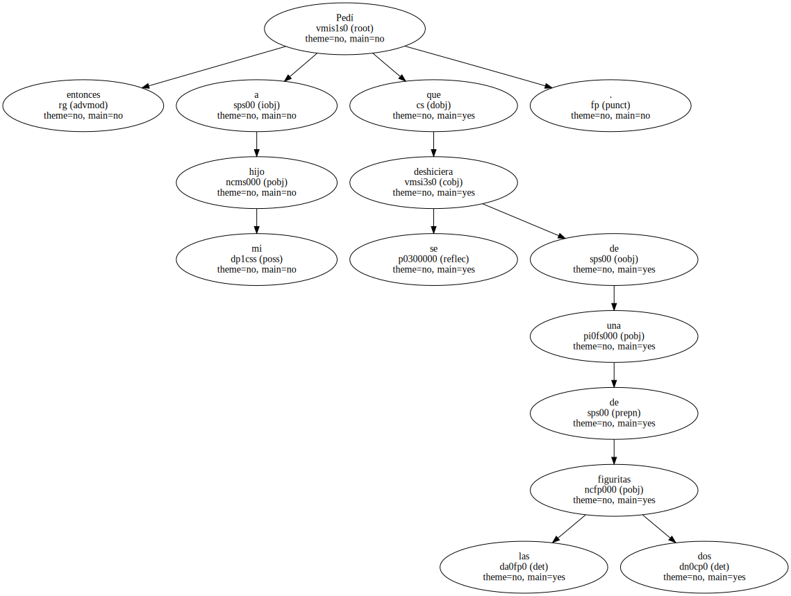Pero partió a la carrera alegando urgencia biológica y no me obedeció.
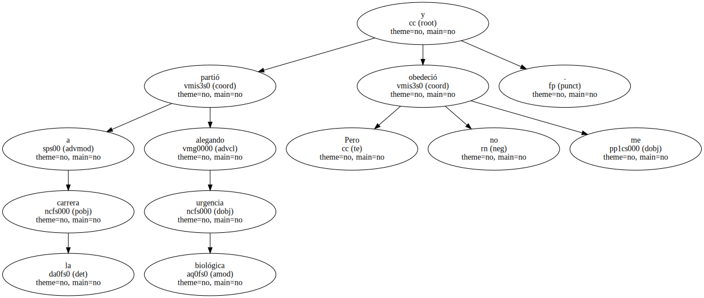- Está bien , hazlo tú - le indiqué a mi mujer , e intenté salir del salón.
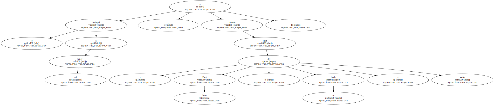Pero mis hijos habían cerrado las puertas y me miraban fijamente.
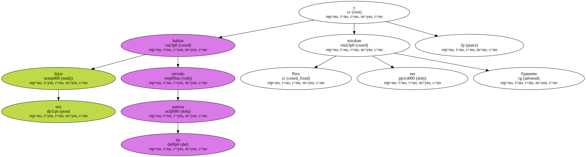No había que ser muy perspicaz para entender el siniestro mensaje.
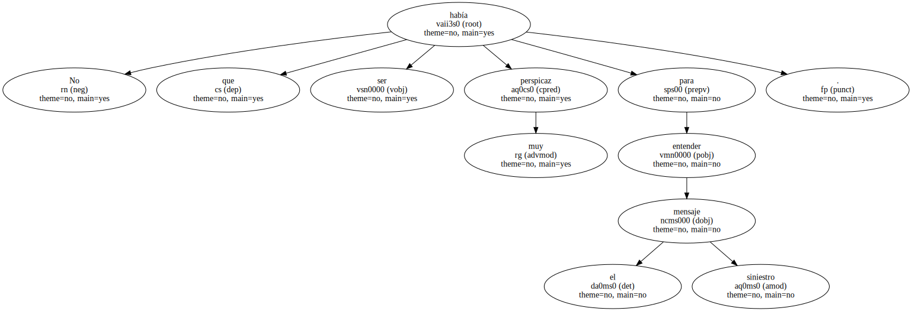- Ah , no mis queridos - les dije -.
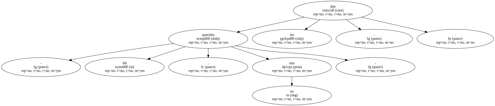Nada de eso ; no seré yo quien decida cuál es el Niño Dios que va al belén y cuál es el que va a la.

- Pues nosotros tampoco - respondió mi mujer a nombre de todos -.
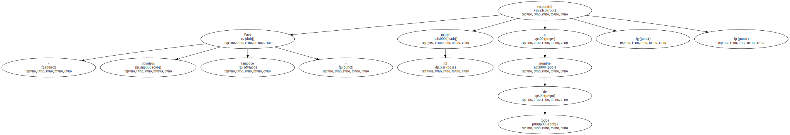Le hemos tomado cariño a los dos , y no tenemos corazón para premiar a uno y castigar al otro.
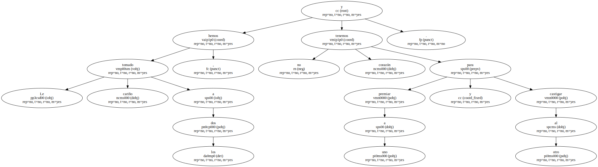